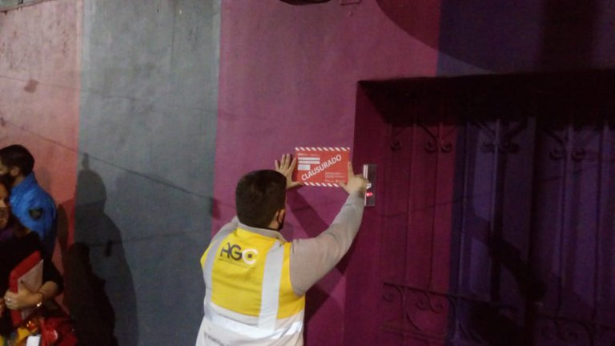
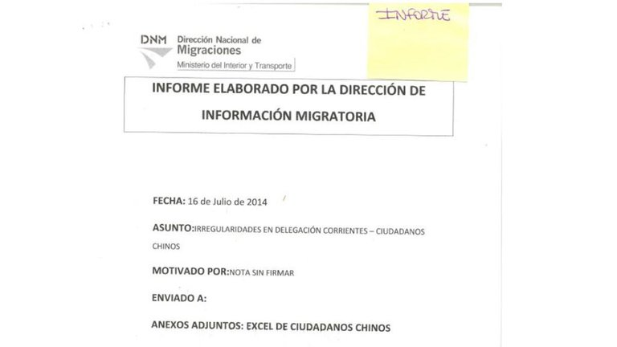
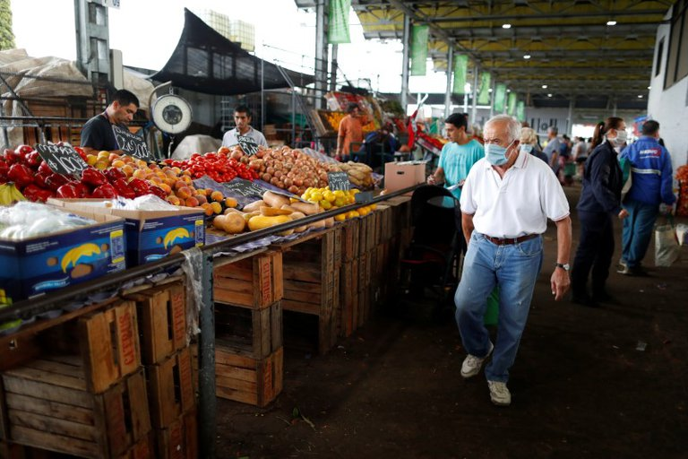

Información confiable. Noticias de Argentina y del mundo
Tras la aglomeración en bares y restaurantes, la Ciudad clausuró otros siete locales por incumplir los protocolos sanitarios
El jefe de Gobierno porteño recorrió hoy las áreas transitorias que se usarán por el rubro gastronómico durante los fines de semana. Son más de 80 cuadras alcanzadas por las medidas de distanciamiento
Después de la semana con mayor tensión política de su gestión por los fondos coparticipables, el jefe de Gobierno porteño, Horacio Rodríguez Larreta, volvió a su agenda habitual en la ciudad de Buenos Aires con una recorrida en San Telmo por las nuevas peatonales transitorias para los bares y restaurantes. En el segundo fin de semana de reapertura gastronómica al aire libre, siete locales fueron clausurados por incumplir los protocolos sanitarios. Según informaron fuentes de la Agencia Gubernamental de Control (AGC) a Infobae, durante este viernes hubo locales sancionados en los barrios de Villa Devoto (2), Palermo (2), Paternal (1), Agronomía (1) y Caballito (1) por violar las disposiciones vigentes para evitar la propagación del coronavirus. De acuerdo al reporte porteño, las clausuras se efectuaron porque los establecimientos infractores permitieron mesas con consumidores en el interior de los locales, y por vender comida y bebida después de las doce de la noche, es decir, fuera del horario habilitado.
El operativo con controles sanitarios continuará durante este sábado y domingo. Desde el agente fiscalizador porteño precisaron que se supervisará que no haya reuniones sociales en los alrededores de los locales gastronómicos, ya que solo puede haber consumidores sentados en las mesas y sillas al aire libre.
Advirtieron riesgos por posible reducción de presupuesto para la Agencia Federal de Aviación Civil en 2021: tendría 20% menos
El presupuesto de la reguladora del espacio aéreo podría traer consecuencias importantes para el país, ya que podría ver degradada una importante calificación como país aeronáuticamente seguro
La presentación del Proyecto de Presupuesto de Egresos de la Federación que presentó la semana pasada el secretario de Hacienda, Arturo Herrera, ante la Cámara de Diputados, que la aprobará con sus propias enmiendas, despertó críticas en el apartado destinado a la disminución de recursos para su regulador aéreo. Y es que, de acuerdo con el documento, la Agencia Federal de Aviación Civil (AFAC), que fue creada en octubre de 2019 par sustituir a la Dirección General de Aeronaútica Civil (DGAC), tiene contemplada un presupuesto de 379.7 millones de pesos para 2021. “La Agencia se asegura el desarrollo oportuno, seguro, eficiente, competitivo, permanente y uniforme de los servicios del transporte aéreo”, indicó Hacienda en el proyecto de egresos. “Este organismo tiene la finalidad de promover altos niveles de seguridad operacional, mecanismos de regulación y control”, añadieron.
Además, la AFAC se encarga de proponer políticas públicas y programas de aviación civil para fortalecer la supervisión y verificación de los diversos concesionarios, permisionarios y prestadores de servicios del sector aeronáutico. Pero, dentro del proyecto de presupuestos, es el organismo desconcentrado del ramo que menos dinero recibiría. Los Servicios a la Navegación en el Espacio Aéreo Mexicano, por ejemplo, propusieron un presupuesto de 6,004.1 millones de pesos. “Con el propósito de proporcionar y mejorar los servicios de ayuda a la navegación aérea con seguridad, fluidez y orden en el espacio aéreo mexicano, garantizando calidad y eficiencia conforme a la normatividad nacional e internacional aplicable para los nuevos proyectos de infraestructura aeroportuaria”, argumentó Hacienda.
El ingreso ilegal de ciudadanos chinos, en los archivos que los hackers robaron a Migraciones
Una carpeta reúne un pedido de investigación sobre presuntos procedimientos irregulares para obtener la residencia permanente y solicitudes de informes de varias embajadas y consulados
El hackeo de información que sufrió la Dirección Nacional de Migraciones sigue entregando material reservado desde que los ciberdelincuentes que intentaron extorsionar al Gobierno de Alberto Fernández para no revelarlos los publicaron en una plataforma rusa llamada DropMeFiles el jueves de esta semana. Una de las carpetas que abarca 30 ítems y que figura bajo el nombre de “Escaneos” reúne un pedido de investigación sobre presuntos procedimientos irregulares para obtener la residencia permanente en la provincia de Corrientes de 78 ciudadanos chinos y, entre otros documentos, los pedidos de informes de varias embajadas y consulados para obtener datos sobre ciudadanos que se hayan radicado en nuestro país y sobre el movimiento de ellos, más que nada durante 2015.
El 16 de julio de 2014, la Dirección Nacional de Migraciones inició un expediente para investigar una denuncia por probable cohecho en la delegación correntina que estaba a cargo de Carlos María Ódena. Allí se especifica que además de Ódena estarían involucrados otros 5 empleados administrativos de esa dependencia. Al “modus operandi” de la maniobra se lo describe con el ingreso de ciudadanos chinos desde ciudades fronterizas a nuestro país (Pilar y zona de influencia en Paraguay) para trasladarlos luego a localidades de la provincia de Chaco como La Leonesa, Las Palmas y Puerto Bermejo. De allí se los derivaba a la capital chaqueña Resistencia donde se los alojaba en supermercados chinos.
El IFE ya perdió casi 10 por ciento de capacidad de compra en sus cinco meses de existencia
Sirvió para comprar casi el 58% de la canasta básica alimentaria del hogar, y ahora cubre el 53 por ciento
El Ingreso Familiar de Emergencia (IFE) se anunció en abril, durante el momento más intenso de la cuarentena, y se empezó a pagar en mayo. En estos días todavía falta completar los últimos desembolsos del tercer pago del programa definido para sostener a los hogares más golpeados por la caída en la actividad económica que trajo aparejada la pandemia de COVID-19, pero la extensión en el tiempo del beneficio y la marcha constante de la inflación ya tuvieron un impacto en la capacidad de compra del bono extraordinario.
ELa inflación de abril marcó un 1,5%, el mes siguiente repitió la cifra, antes de acelerar al 2,2% en junio. El avance del 1,9% de julio es el último dato oficial, pero según el índice que elabora Ecolatina de precios al consumidor se movió otro 2,6% en agosto. Es un acumulado de 10 puntos de inflación en el breve período de vida de la asignación extraordinaria.
Así, medido en pesos constantes, esos $10.000 que cobran en estos días los últimos beneficiarios del IFE 3 tienen un poder de compra equivalente a $9.194 de abril. Un 9% menos que cuando fue lanzado. La cifra es un poco mejor si se la compara con el avance de alimentos y bebidas en lugar de con el nivel general de precios. Se trata de los consumos más sensibles en el nivel socioeconómico al que fue dirigido, dentro del que se asume que una porción más importante del ingreso se destina a la canasta básica alimentaria.